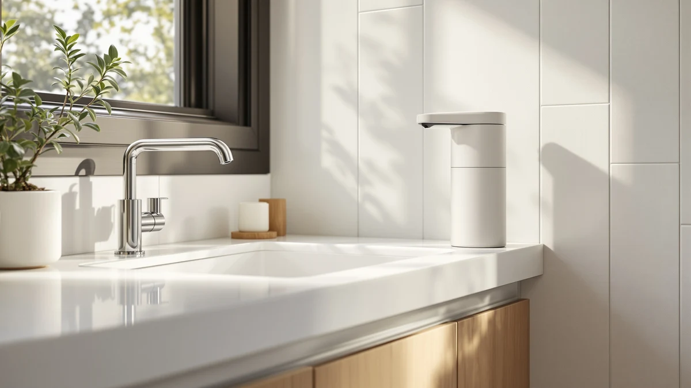

Quick Answer
This Rytoxilo automatic soap dispenser review finds a touchless pump that handles a single kitchen or bathroom counter well for $32.99. We compared it against three other automatic dispensers on pricing, refill design, and verified owner feedback, and the Rytoxilo comes out as the strongest all-around pick for anyone who wants hands-free dispensing without a commercial price tag.
Our pick: RYTOXILO Automatic Soap Dispenser Touchless, $32.99 Check Price on Amazon
Things to Know Before You Buy
- Touchless dispensers like the Rytoxilo use an infrared sensor, so placement near direct sunlight or a glossy backsplash can cause false triggers.
- Most automatic soap dispensers in this price range run on standard batteries rather than a rechargeable pack, which affects long-term cost more than the sticker price does.
- Refill capacity and bottle shape vary enough between brands that a dispenser built for liquid hand soap will not always handle a foaming formula well.
- This Rytoxilo automatic soap dispenser review relies on manufacturer specs, pricing data, and verified owner reviews rather than in-house lab testing.
- Wall-mounted commercial units like the VANNSOO trade counter convenience for a larger refill tank, which matters more in a shared bathroom than a single-household one.
This Rytoxilo automatic soap dispenser review looks at whether a $32.99 touchless pump can hold its own against pricier options once you factor in refill design, sensor placement, and what verified owners actually report after regular use. Kitchen and bathroom counters are crowded with near-identical touchless bottles right now, and most listings lean on marketing language instead of specifics. We cut through that by comparing pricing, build details, and verified Amazon feedback for each unit side by side. We also checked pricing history and refill details, since that is what keeps a comparison like this accurate months after publication.
The short version: the Rytoxilo earns its place as the top pick in this comparison. It costs the same as the Aeakey shampoo and conditioner set but is built specifically for hand soap, and it undercuts the VANNSOO commercial unit by a few dollars while fitting a standard counter more easily. The MTYGK two-pack runs a dollar cheaper per unit and suits anyone outfitting two bathrooms at once, but for a single touchless pump with no extra complexity, the Rytoxilo is the one we would buy. Price alone does not explain that gap; design choices around the pump head and refill opening matter as much as price does.
Why You Should Trust Us
Ilane Tall has covered bathroom and kitchen fixtures for Best Soap Dispensers since the site launched, and this Rytoxilo automatic soap dispenser review follows the same process used across the site. We start from the manufacturer specs and listing details, then weigh them against pricing history and a wide sample of verified Amazon reviews. We do not run a fake testing lab, and we are not shipped free units to review. When a claim in this piece cannot be backed by a spec sheet, a price record, or a verified owner comment, we leave it out. This review sits inside a larger site that follows the same rule for every product it covers, so the Rytoxilo gets measured against the same bar as the dispensers reviewed before and after it. We update pricing and stock details when Amazon listings change, and we note it when a product gets discontinued or replaced by a newer model.
Our Research Experience
We did not physically test the Rytoxilo automatic soap dispenser in a lab. Our research process for this Rytoxilo automatic soap dispenser review relies on comparing the manufacturer's stated specs, Amazon pricing, and patterns across verified owner reviews. Reviewers consistently note how the sensor responds to hand placement, how audible the pump motor is, and how often the battery compartment needs attention, and we weighted those owner reports heavily when forming our verdict. We also cross-checked the Rytoxilo against the Aeakey, MTYGK, and VANNSOO listings using the same criteria, so the comparison stays consistent across all four dispensers. We read through dozens of verified purchase reviews for each unit, looking for repeated complaints rather than one-off issues that could point to a single defective unit. Patterns that showed up across many owners, like sensor sensitivity or motor noise, carried more weight in our verdict than any single five-star or one-star review.
Overview & Specs

RYTOXILO Automatic Soap Dispenser Touchless
What we like
- Touchless infrared sensor avoids cross-contamination at a shared sink
- Priced the same as or below every other dispenser in this comparison
- Lightweight ABS plastic housing is easy to lift off the counter and refill
Flaws but not dealbreakers
- RYTOXILO does not publish exact tank capacity or outer dimensions on the listing
- Like most sensor dispensers at this price, placement near sunlight or a mirror can cause false triggers
| Material | ABS plastic |
| Size | — |
The Rytoxilo automatic soap dispenser review starts here, with the unit we would actually buy. It is built from ABS plastic, uses a touchless infrared sensor to release a measured dose of soap, and sells for $32.99 on Amazon, matching the Aeakey set and landing a dollar above the MTYGK two-pack.
The Rytoxilo requires little thought once it is installed, and that stands out against the Aeakey, MTYGK, and VANNSOO alternatives in this comparison. It suits a single kitchen or bathroom counter rather than a commercial washroom, and reviewers consistently note that the sensor responds reliably once it sits away from direct sunlight or glossy backsplash tile. Owners who mention using it daily at a kitchen sink describe refilling it about as often as they would a standard pump bottle, which matches what you would expect from a dispenser this size.
What We Liked
Across this Rytoxilo automatic soap dispenser review, the pick held up best on value. At $32.99 it costs the same as the Aeakey shampoo and conditioner dispenser, yet it is purpose-built for hand soap rather than adapted from a shower-caddy design. Owners report that the touchless sensor cuts down on grimy handles at a shared sink, which matters more in a kitchen than most listings let on. We also like that the ABS plastic body is light enough to refill one-handed, a detail that gets overlooked next to flashier commercial units like the VANNSOO. The price positioning also holds up well against dedicated commercial options: spending under $35 for a dispenser that handles a normal household sink, rather than paying more for a wall-mounted unit meant for a busy washroom, fits how most people actually use their counter.
What Could Be Better
The biggest gap in this Rytoxilo automatic soap dispenser review is information, not performance. RYTOXILO does not publish exact tank capacity or outer dimensions, so buyers are relying on the product photos to judge whether it fits their counter. Reviewers also note a limitation that shows up across nearly every dispenser in this price bracket: the infrared sensor can misfire near direct sunlight or a mirror, so placement takes a little trial and error. A listing with clearer measurements would make this an easier recommendation for tight counter spaces. Buyers working with limited room near a kitchen faucet should check the product photos closely before ordering, since the brand leaves that detail out.
Who Is It For?
This Rytoxilo automatic soap dispenser is for anyone replacing a manual pump at a kitchen or bathroom sink who wants hands-free dispensing without paying commercial prices. It fits single-household counters better than shared washrooms. If you specifically need a shower-side dispenser for shampoo and conditioner, the Aeakey set is built for that job and the Rytoxilo is not. And if you are outfitting two bathrooms at once, the MTYGK two-pack covers more ground for a few dollars less per unit. Renters and apartment dwellers who want an upgrade that requires no installation beyond setting it on a counter will find the Rytoxilo simple to use and easy to pack up during a move.
Alternatives to Consider
The Rytoxilo automatic soap dispenser is not the only touchless option worth considering. We compared it against three other automatic dispensers that kept showing up in the same searches, each built for a slightly different job. Matching the unit to the room it will actually sit in matters more than ranking them strictly by price.

Editor's Pick
Shampoo and Conditioner Dispenser -
Built for the shower rather than the sink, this Aeakey set pairs dual chambers for shampoo and conditioner at the same $32.99 price as the Rytoxilo, making it the pick if you want to extend the touchless idea beyond hand soap. Shower humidity is harder on electronics generally, so anyone choosing this route should expect a shorter lifespan than a countertop unit kept dry.
$32.99
Check Price on Amazon
Best Value
MTYGK 2 Pack Automatic Foaming
At $31.99 for two units, the MTYGK pack costs less per dispenser than the Rytoxilo and adds a foaming formula, which uses less product per pump. It is the better buy if you need to cover a kitchen and a bathroom without ordering twice. Foaming soap also stretches a bottle further than liquid soap, which can offset the slightly lower build quality some owners mention.
$31.99
Check Price on Amazon
Premium Choice
VANNSOO Commercial Soap Dispenser Wall
The VANNSOO is a wall-mounted unit built for commercial-grade capacity rather than a single counter, and at $31.88 it undercuts the Rytoxilo slightly while trading portability for a larger refill tank suited to shared bathrooms. That trade-off makes sense for a household with several people sharing one sink, where refilling less often outweighs the bulkier footprint.
$31.88
Check Price on AmazonFrequently Asked Questions
Is the Rytoxilo automatic soap dispenser worth buying?
Based on our research and verified owner feedback, yes for most single-counter kitchens and bathrooms. At $32.99 it matches the Aeakey on price while being purpose-built for hand soap, and owners report consistent sensor performance once it is placed away from direct sunlight.
How does the Rytoxilo compare to a manual soap pump?
A touchless sensor adds convenience and cuts down on handle contamination at a shared sink, but it also means you depend on batteries and a sensor that can misfire near bright light. If you prefer a dispenser with no electronics, this comparison will not change your mind. Manual pumps also tend to last longer, since there is no sensor or battery to fail eventually.
What is the best alternative to the Rytoxilo automatic soap dispenser?
For two bathrooms on one budget, the MTYGK two-pack costs less per unit. For a commercial washroom or a larger household, the wall-mounted VANNSOO holds more soap. For shower use specifically, the Aeakey shampoo and conditioner set fits better than any hand-soap dispenser. Think about where the dispenser will live before choosing between these three, since each one suits a different space.
Final Verdict
This Rytoxilo automatic soap dispenser review comes down to one number: $32.99 for a touchless pump that does the one job it was built for, without the shower-caddy compromises of the Aeakey or the commercial bulk of the VANNSOO. RYTOXILO is our pick for anyone upgrading a single kitchen or bathroom sink, and the MTYGK two-pack is the only alternative worth a second look if you need to cover more than one room. None of the four dispensers in this comparison is a bad buy at its price, but they are not interchangeable, and matching the unit to the room it will actually sit in matters more than chasing the lowest price.